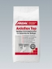

Клеящие растворы
Таблица применения:
НАКЛЕИВАНИЕ КЕРАМИЧЕСКИХ ПОКРЫТИЙ
Европейский стандарт DIN EN 12004 устанавливает требования по качеству тонкослойных клеевых растворов:
Химическая основа материала:
С = цемент, D = дисперсия, R = двухкомпонентная смола (эпоксидная)
Прочность сцепления с основанием:
1 – превышает 0,5 Н/мм2 (0,5 мПа)
2 – превышает 1,0 Н/мм2 (1,0 мПа)
F – Быстросхватывающийся – через 24 часа прочность сцепления с основанием составляет 0,5 Н/мм2 (0,5 мПа)
T – Тиксотропный – повышенная устойчивость к оползанию на вертикальных поверхностях равна 0,5 мм
E – Увеличенное время до начала схватывания нанесенного раствора ("открытое время") больше 30 минут
Европейский стандарт DIN EN 12002 устанавливает требования к деформируемости растворов:
S1 – деформируемость превышает 2,5 мм
S2 – деформируемость превышает 5 мм
Основные характеристики клеящих растворов. Классификация по DIN EN 12004

Ардафлекс ТопArdaflex Top
Высокоэластичный, тонкослойный раствор с хорошими рабочими характеристиками, высокой стойкостью и универсальным спектром применения.
Отвечает требованиям стандарта EN 12004-С2 ТЕ и Руководящих указаний по эластичным растворам (DIN EN 12002 - S1). Предназначен для внутреннего, наружного и подводного применения.
Низкий уровень солей хромовой кислоты отвечает стандарту TRGS 613.
Клеящий раствор Ардафлекс Топ в первую очередь предназначен для приклеивания керамической напольной и настенной плитки, каменной керамики (Feinsteinzeug) , стеклянной и фарфоровой мозаики, плит из природного и искусственного камня, а также жесткого пенопласта (напр., пенополистирола - Styropor).
Применение клеящего раствора Ардафлекс Топ рекомендуется в следующих случаях:
- при наклеивании вышеуказанных материалов на проблемные, с точки зрения обеспечения адгезии, поверхности, например - облицовочный бетон, асфальтные (литые) бесшовные полы, сульфтно-кальцевые полы(calciumsulfatgebundene Estriche) старое керамическое покрытие, гипсовая штукатурки и гипсовые плиты(Gipsbauplatten);
- при наклеивании вышеуказанных материалов на поверхности с вероятным изменением размеров в результате температурных колебаний, например - полы с подогревом, балконы, террасы и фасады.
Giscode ZP1
Расход: 1,5 - 3,0 кг/м.кв., зависит от типа зубчатой рейки.
Хранение: в сухом и прохладном месте
Упаковка: 4 пакета по 5 кг в упаковке, мешок 25кг
|
Жизнеспособность |
Открытое время | Доступность для прохода | Затирка швов | Термостойкость | Расход |
| 3 - 4 часа | > 30 минут | ~ 12 часов | ~ 12 часов | + 80° С | 1,5 - 3,0 кг/м2 |